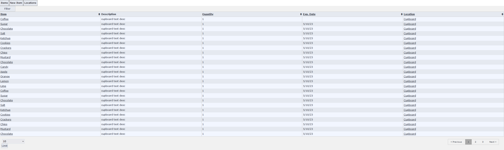
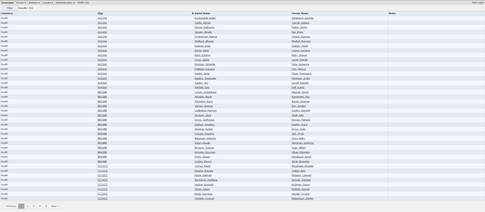

ERP System
Initially developed for a food pantry, later turning into a larger ERP system. The intention of this project is to finalize and sell it to medium-sized organizations. Currently, it is capable of basic inventory management and organization asset purchases.
This is an in-progress system with planned additions to include barcode scanning and generating reports for item retrieval lists. Currently, the system provides an efficient alternative to spreadsheets and handwritten notes, allowing the entry, management, and retreival of organization data.
Asset and Customer Management
Beginnings of a larger ERP system for and alongside Goshen City's Clerk/Treasurer Office, managing cemetery plots, owners, and burials.
This is the beginning of a larger ERP system that manages city resources and assets. Currently, the system provides an efficient alternative to spreadsheets and handwritten notes, allowing the entry, management, and retreival of cemetery data.
